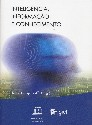

|  |
| BOOK AND SOFTWARE REVIEWS | ||||
Taparanoff, Kira (Org.). Inteligência, informação e conhecimento. [Intelligence, information and knowledge]. Brasília: IBICT, UNESCO, 2006. 453 pp.ISBN: 85-7652-063-X [Price not given]
Taparanoff, the editor of this work (and author of one contribution and joint author of another), anticipates that this book will fill the gap between academia and practitioners regarding the urgency of developing knowledge and competencies that enable organizations to deal with the environment within which they operate. Competition, globalization, continuous change, information technologies, information and knowledge management are obviously the needed ingredients. The fact that UNESCO supports this publication stresses the recognition of the social, economic and cultural importance of debating the so-called knowledge Society and acting upon the outcomes of the debate.
This book is a good framework for those wishing to have access to an introduction to basic assumptions resulting from the different disciplines, and different approaches, related to its subject. It should be seen as a sum of the contributions, which vary in depth and character, some of which are original, others being more in the nature of summaries of existing knowledge and ideas.
The book is organized in four parts. The first (Fundamentals), with five chapters, including contributions from the USA and the UK, presents a more theoretical approach, is devoted to the precision of some concepts and assumptions such as: information science, information management, knowledge management, the impact of trust in knowledge sharing, competitive intelligence and the social role of knowledge and access to knowledge. The second (Management of information and knowledge in organizations) presents a more practical approach, suggesting how knowledge management can be implemented in the context of new forms of organization and in of the so-called learning organizations. The third part (Modelling and structuring information in the management of knowledge) focuses on models either related to information, regarding its nature or its architecture, or knowledge and its nature and the possibility of it being managed. The last part (Methods, techniques and software) is mainly concerned with a number of software packages and a final chapter on marketing - which seems somewhat out of place.
As a collection of texts, there is, in some parts, an inevitable lack of a coherence in the structure of the book, and the flow of subjects does not always appear to be logical. There is also a frequent repetition of subjects and assumptions, which, again is a common issue in publications of this kind.
These weakness could have been solved recurring to a more elaborated introduction, interrelating the different contributions. However, they do not detract significantly from the value of the book, which I recommend highly to Portuguese-speaking countries where it is very difficult to find books written in Portuguese related to these subjects. In these countries, this book should be compulsory in institutions that train information professionals.
The book is an excellent example of modern book production, is well illustrated and has a good index.
Ana Azevedo
Faculdade de Engenharia
Universidade do Porto
Portugal
January 2007
How to cite this review
Azevedo, A. (2006). Review of: Taparanoff, Kira (Org.). Inteligência, informação e conhecimento [Intelligence, information and knowledge]. Brasília: IBICT, UNESCO, 2006. Information Research, 12(2), review no. R258 [Available at: http://informationr.net/ir/reviews/revs258.html]